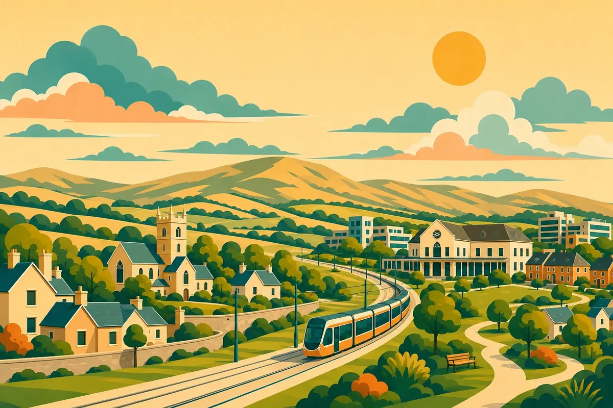

Community connection
S&CT
Saggart & Citywest Together
A community resource connecting neighbours with local history, practical supports and opportunities to take part. Learning pages, a local-knowledge quiz and community stories help newcomers and established residents explore the place they share.